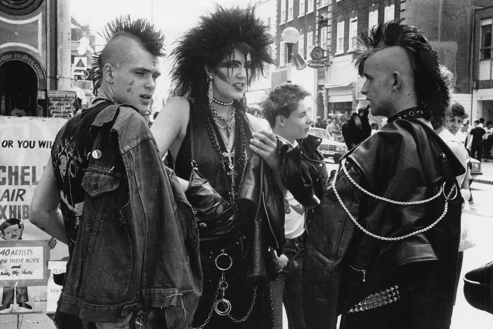

In two, seemingly distinct yet deeply coupled art forms, fashion and music have long had an overlap that has styled and shaped generations of subcultures. Both invariably linked as means of self-expression, fashion can be powerful in its ability to allow people to wear their interests and personality on their sleeve, also being more easily found and recognized by others of like mind. Be it the distinctive battle jackets and bondage wear of British punk music in the 1980s, nu metal fashion of the early 2000s, or countless other subcultural examples, people have long found community in shared interests, which can be made more immediately accessible through fashion. The mutualistic overlap of fashion and music is not just something to be analyzed, but something that is actively curated and influenced. At the highest levels of fashion, designers and companies tap musicians for what they think to be a fitting score or accompaniment to the runway show. Whether it be static self expression, or living creative efforts and links between the two, the relationship between fashion and music is well-established and here to stay.